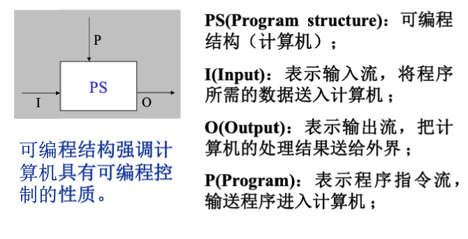
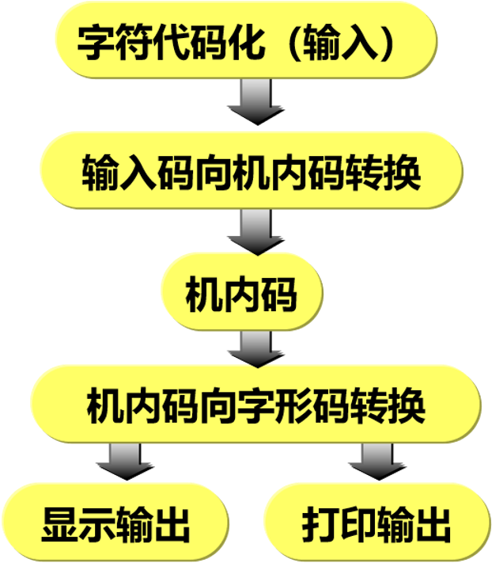
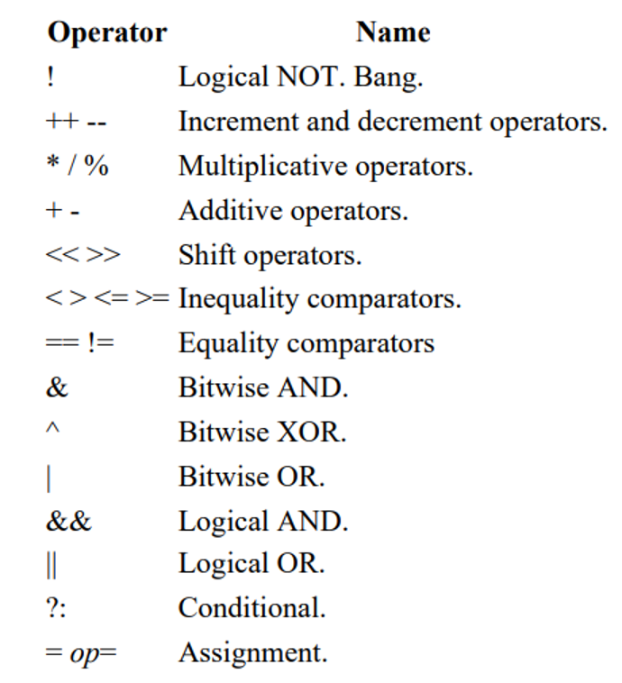
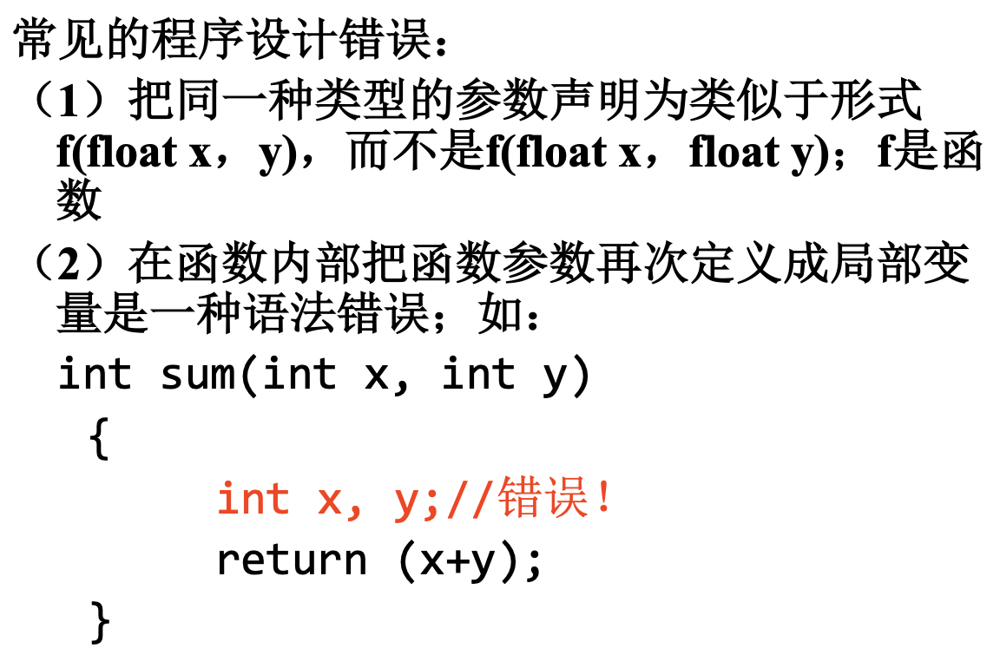
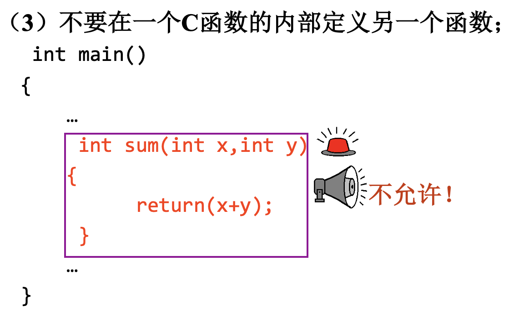
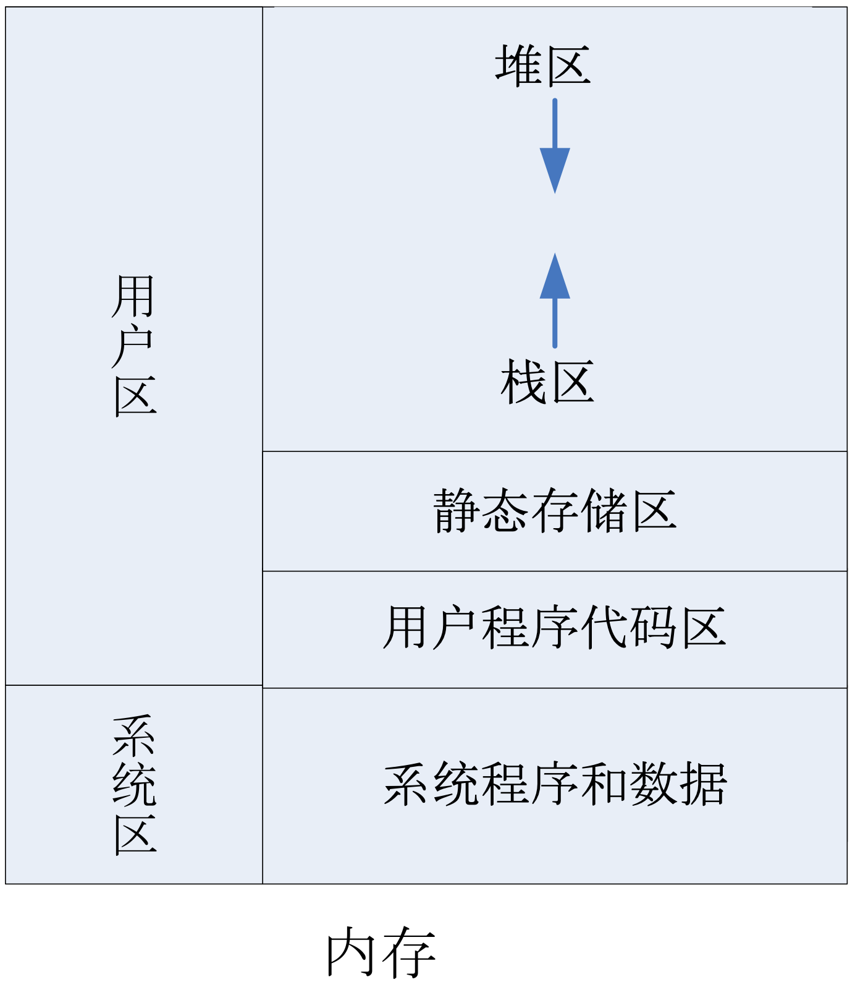
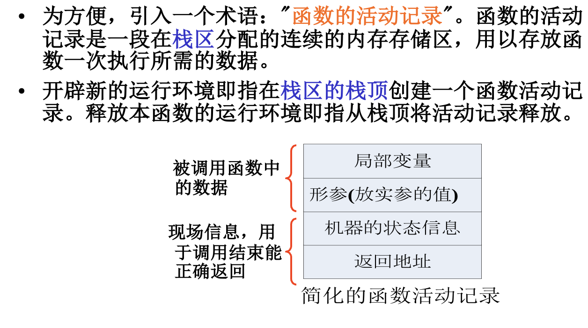
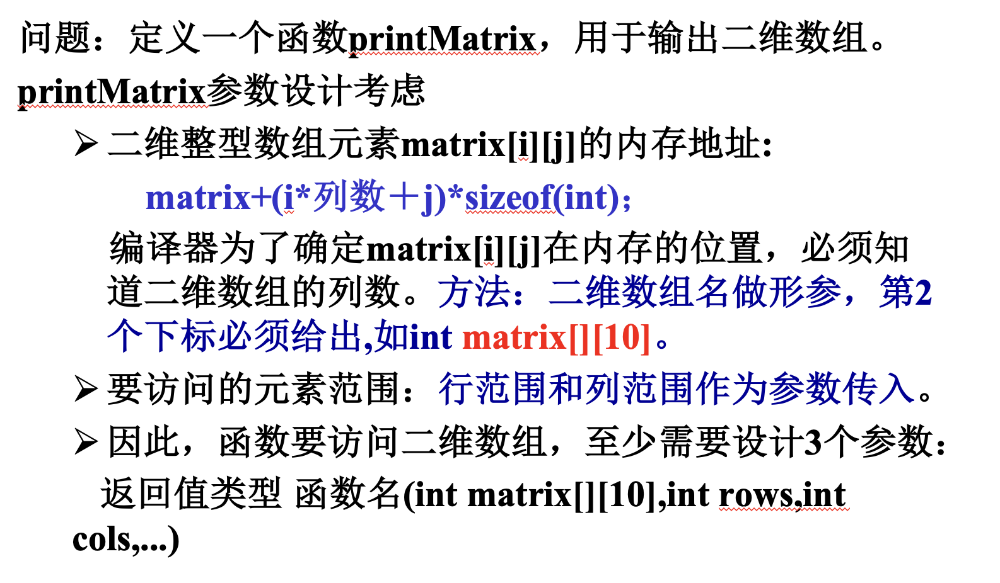

一、程序语言概述
- 可编程

- 计算机信息处理本质是: 接收输入的数据、对输入的数据进行加工和处理、产生结果并输出。
- 程序可以预先存储在计算机中调度运行。计算机的操作是在程序的控制下进行的。
- 可编程结构、图灵机都是计算机模型。
- 冯诺依曼机
- 程序的运行就是不断地取指令、分析指令、执行指令的过程，这3个步骤均由控制单元来控制。控制单元取指令、分析指令，产生操作控制信号发给输入输出设备、运算部件或者主存，完成指令的执行。
- 指令由“0”和“1”的二进制码组成 ,是指挥计算机工作的命令，是计算机唯一可以直接识别的语言；
- 指令系统：计算机能直接识别和执行的全部指令的集合， 称为该种计算机的指令系统。
- 程序是按事先设计的功能和性能要求编制的指令序列。
- 算法：完成一个任务或者解决一个问题的步骤 序列（操作序列）。
- 符号语言：用符号或助记符来表示不同的机器语言指令(包括操作码和和操作数地址）。符号语言又称汇编语言。
- 过程化的程序设计即是实现某一计算的操作过程和操作步骤，然后用编程语言来描述这些操作过程和步骤。
- 程序要素：数据与运算表达式、输入输出、控制结构、子程序(函数)
- C编程活动：编辑程序-编译程序-链接程序-运行程序
二、程序设计初步：数据类型、常量、变量
- 最小的存储单元是位（bit）
- 字 （word）是设计计算机时运算单元给定的整数运算的数据通路的宽度。因此，计算机中每个数据的二进制位数都是固定长度的。
- 汉字数字化

- 数据类型包括两层含义：定义了值的集合(属于该类型的数据能够取值的范围）以及能应用于这些数值上的操作集合（数据操作）。
三、算数运算/逻辑运算
- C语言中默认的算术运算符的结合方向为“自左至右”,即先左后右。但是赋值运算符是右结合，即从右到左计算。
- 命名常量：不能改写的变量(命名常量)。有些变量一旦定义并初始化,便不允许程序去改变该存储空间中的数据。例如，C语言中：
const float pi = 3.14;- 小数转化为整数：
- 小数四舍五入取整：(int)(2.5+0.5); (int)(-2.3-0.5);
- 小数向上取整：ceil函数返回大于等于参数的最小整数
- 小数向下取整：floor函数返回小于等于参数的最大整数
- 逻辑非运算最高，然后是算术运算和关系运算，其他逻辑运算的优先级仅高于赋值运算。逻辑运算的结合性默认是左结合，只有非运算是右结合。

- 发生意外或错误，程序无法继续处理时，需要终止，操作系统提供了exit()函数。
/*
功 能: 关闭所有文件，终止正在执行的进程。
exit(0)表示正常退出；
exit(x)（x不为0）都表示异常退出，这个x是返回给操作系统的，以供其他程序使用；
*/
void exit(int status); // 参数status，程序退出的返回值- 注意++和—有前缀和后缀的区别：
- ++i，--i(在使用ｉ之前,先使 i 的值加(减)１)
- i++，i--(在使用ｉ之后,使ｉ的值加(减)１)
四、有限自动状态机
- 有限状态机可以简称状态机，是表示有限个状态以及在这些状态之间的转移和动作等行为的数学模型。
- 状态：存储关于过去的信息，它反映从系 统开始到现在时刻的输入变化。
- 转移:指示状态变更，并且用必须满足来 确使转移发生的条件来描述它。
- 动作:在给定时刻要进行的活动的描述。
五、子程序
- 子程序是封装并给以命名的一段程序代码，这段程序代码完成子程序所定义的功能，可供调用。
- 封装：子程序可以独立完成功能，调用者只需知道如何调用子程序（即子程序接口）
- 引入子程序的目的：
- 程序"复用"，避免在程序中使用重复代码；
- 结构化程序设计的需要：自顶向下、逐步细化，将复杂问题分解为相对简单的子问题，这些子问题用子程序实现，从而提高主程序结构的清晰性和易读性。
- 使程序的调试和 维护变得更加容易。
- 子程序设计原则
- 高内聚：功能相对独立和完整；
- 低耦合：与外界（调用者）的关系尽量松散，不要太紧密，使其能方便地被重用；
- 子程序在C语言中的实现机制：C语言中的函数机制
- return语句中返回值表达式的类型要和返回值的类型说明一致。如果不一致，则以返回值类型为准(进行类型转换，参数类型的转换有可能是低类型向高类型转换，也可能是高类型向低类型转换。高类型向低类型转换可能会导致不正确的结果（如long类型向short类型的转换）。)。


- 函数的调用：函数的调用和执行的实质是控制转移，调用函数时，将控制转到被调用的函数，被调函数执行结束时，则将控制转回主调函数，继续执行后续的操作 。
- 子程序参数传递两种方式：按值传递和按引用传递。
- 函数原型的作用：是对被调用函数的接口声明，它告诉编译器函数返回的数据类型、函数所要接收的参数个数、参数类型和参数顺序，编译器用函数原型校验函数调用是否正确。
- 数据在内存中的存储：
- 系统区：用于存放系统软件和运行需要的数据，如操作系统。只要机器一运行，这部分空间就必须保留给系统软件使用
- 用户程序代码区：存放用户程序代码
- 静态存储区：存放程序运行期间不释放的数据（静态局部变量、全局变量）
- 栈区：存放程序运行期间会被释放的数据（函数参数、非静态局部变量）以及活动的控制信息
- 堆区：用户可以在程序运行过程中根据需要动态地进行存储空间的分配，这样的分配在堆区进行


## 六、数组
* 线性表是具有相同数据类型的\(n(n>=0)\)个数据元素的有限序列。线性表数据元素之间为线性关系，即任意两个元素之间都可比较大小。
* 线性表有两种存储结构：连续（顺序表）、随机（链表）。
* 数组初始化是在编译阶段进行的。这样将减少运行时间，提高效率。
* 若在定义一个数组的同时赋初值，如果初始化值的个数小于数组元素的个数，剩余的元素被自动初始化为0。(整型数组各元素不会自动初始化为0，至少要把第一个数组元素初始化为0，才能使剩下的元素自动初始化为0。)
* 二维数组做形参，第2个下标必须给出，使编译器能确定元素内存地址；多维数组做函数形参时，需要给出除了第1个下标之外的其他所有的下标

七、字符串
- scanf函数读取用户键入的字符到字符数组，直到遇到空格、回车、或文件结束符为止。空格、回车、或文件结束符被丢弃，最后一个字符读入后往字符数组中写入结束符‘\0’。
- gets()函数简单易用，它读取整行输入，直至遇到换行符，然后丢弃换行符，存储其余字符，并在这些字符的末尾添加一个空字符使其成为一个C字符串。它经常和puts()函数配对使用，该函数用于显示字符串，并在末尾添加换行符。成功则返回所读字符串指针，失败返回空指针.
char * gets(char * str);- 将str所指向的字符串输出到文件或显示器上，字符串结束标记‘\0’ 不会被输出。成功则返回字符长度，失败返回-1。puts输出字符串时，会将字符数组中所有内容输出，直到‘\0’，但会在末尾自动追加输出‘’ 。
int puts(const char * str);- fgets从文件或键盘读取字符到str所指向的数组中，直到读够n-1个字符，或读到换行符‘’ ，但不会丢弃换行符，或者读到文件末尾。最后一个字符读入后自动写入一个 '\0' 。若成功则返回str，若无字符读入数组或者读取失败返回空指针NULL。
char * fgets(char *str, int n, FILE *stream);- 将str所指向的字符串输出到文件或显示器上，字符串结束标记‘\0’ 不会被输出。
int fputs(const char * str, FILE *stream);